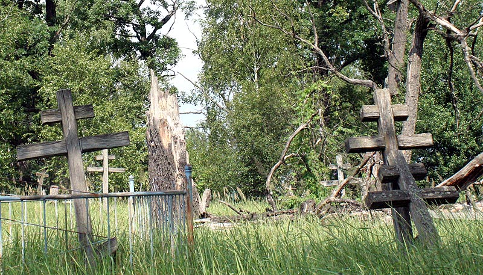
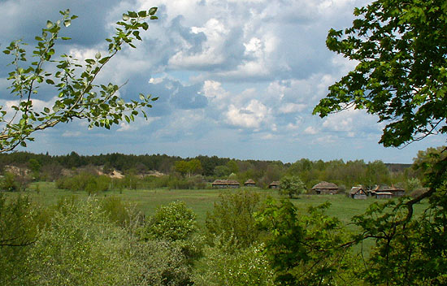

Кинуті населені пункти чорнобильської зони

{kind=link}

Кинуті села чорнобильської зони
Широкомасштабне забруднення території
навколо зруйнованого реактору поставило перед державою питання щодо
термінової евакуації цивільного населення та його переселення на чисті
від радіонуклідного забруднення території.
Рішення про евакуацію та переселення було прийняте урядовою комісією
колишнього СРСР через 37 годин після руйнації реактору на ЧАЕС. Згідно з
офіційними даними, евакуація населення тривала з 27 квітня до 16 серпня
1986 року.
Досить оперативно та організовано евакуацію населення було проведено з
міста Прип’ять та на залізничній станції Янів. Звідти було виселено біля
50 тис. чоловік. Населення міста Прип’ять було повідомлене про
евакуацію по радіо о 12 годині. Евакуацію розпочато 27.04.86 о 14 годині
.
Усього на першому етапі евакуації було виселено 81 населений пункт
Київської та Житомирської областей. Було відселено біля 90 тисяч чоловік
(хоча існують дані про 115 тисяч відселених).
На думку науковців, що проводять вивчення процесів трансформування
урбаністичних ландшафтів населених пунктів у природні ландшафти всі
колишні населені пункти (села, міста) слід називати селищами і
городищами, тобто такими природно-територіальними комплексами, де свого
часу жили люди, але нині залишилися лише кинуті будівлі, конструкції та
комунікації. Оскільки людина майже не втручається в хід природних
процесів, то такі комплекси все більш дичавіють і отримують природний
вигляд. Навіть у м. Чорнобиль і в тих селах, де постійно живуть люди,
певна частина територій теж дичавіє.
{kind=link}

Брошенное село Рудьки
Метою даного розділу є накопичення та
збереження інформації щодо населених пунктів Чорнобильської зони
відчуження – їх історія, минуле та сучасне…
Характеристика міст Прип’ять та Чорнобиль подано на окремих сторінках.
Денисовичі
Цей населений пункт знаходиться на
відстані 47 км від селища Поліське (районного центру), та в 3 кілометрах
від державного кордону з Білорусією. Існують відомості про існування
села Денисовичі з 18 сторіччя. В селі була дерев’яна,
Хресто-Воздвиженська церква, яка була збудована і освячена в 1762 році.
На даний час церкви уже не існує.
В середині 70-х років минулого сторіччя в селі налічувалось близько 530 мешканців та існувала восьмирічна школа.
Переселення населення було проведено в 1993 році до села Трубівщина в
Яготинському районі Київської області. В селі Трубівщина, спеціально для
переселенців, було забудовано нову частину села.
Рудьки
В середині 19 століття цей населений
пункт мав назву Рудяки (наголос на останньому складі). Село Рудьки
знаходиться на відстані 33 км на північний-захід від міста Чорнобиль. В
трьох кілометрах від села розташоване село Річиця. Село Рудьки має
невеликі розміри й власної церкви не мало. Адміністративно входило до
Річицької сільської ради.
Мешканці села було відселені в 1986 році в село Аркадіївна Згурівського району Київської області.
Річиця
Село розташоване на відстані 45 км на
захід від міста Чорнобиль (поблизу с. Товстий Ліс). Село було центром
сільської ради до якої належали: села Буряківка, Нова Красниця, Рудьки. В
70-х роках минулого сторіччя в селі налічувалось близько 700 мешканців
та існувала початкова школа.
Відселення населення з забруднених територій відбулось у 1986 році, яке
було переселено в села Макарівського району Київської області.
Товстий Ліс
Село Товстий ліс знаходиться на відстані
43 км від районного центр – міста Чорнобиль, та близько 7 км від
залізничної станції Товстий ліс. Цей населений пункт має давню історію
та згадується в документах з 1447 року. Село мало Свято-Воскресенську
церкву. Вона була збудована і освячена в 1760 році. На початку 70-х
років минулого сторіччя село нараховувало біля 800 мешканців. В селі
була середня школа.
Відселення населення відбулось у 1986 році в селища Макарівського району Київської області.
Буряківка
Невеличке село, яке розташоване на
відстані біля 50 км від міста Чорнобиля. Згадки про село Буряківка
знаходяться в літературних джерелах середини 19-го сторіччя. За
адміністративним устроєм село Буряківка відносилось до Річицької
сільської ради.
Після аварії на ЧАЕС мешканців села Буряківка було переселено у села Макарівського району Київської області.
Чистогалівка
Село знаходиться на відстані 22 км від
м.Чорнобиль, та біля 4 км від Чорнобильської АЕС. Село Чистогалівка
згадується в літературних джерелах середини 19-го сторіччя
(Наприклад:Похілевич Л. Сказанія. с.153). В середині 70-х років 20-го
століття в селі мешкало біля 1000 жителів та була восьмирічна школа.
Село знаходиться майже в епіцентрі західного сліду радіоактивного викиду
Чорнобильської АЕС. Після відселення цивільного населення село було
ліквідоване.
Населення переселено в село Гавронщина Макарівского району Київської області. Окремі сім’ї виселено в Миколаївську область.
Луб’янка
Село відоме з першої половини 17-го
сторіччя. В селі існувала Свято-Миколаївська церква, дерев’яна, час
заснування якої невідомий. Село Луб’янка знаходиться на відстані 36 км
від міста Поліське (районного центру).В середині 20-го століття в селі
мешкало біля 1000 чоловік та була восьмирічна школа. Існують відомості
що Луб’янка була центром гончарства цього району.
У 1986 році населення було переселено в новозбудоване село Луб’янка, яке знаходиться в Васильківськім районі Київської області.
Стечанка
Село Стечанка як поселення відоме з
початку 17-го сторіччя, а у 1634 у селі вже діяла церква. Село
розташоване за 25 км від міста Чорнобиль. Відомо, що село Стечанка було
давнім адміністративним, культурним та релігійним центром цього регіону.
У Стечанці, на початку 20-го сторіччя, мешкали не тільки православні,
але й католики. При цьому загальна кількість мешканців села складала
біля 1200 чоловік. Віддавна в селі існувала школа.
Після аварії на ЧАЕС населення переселено в село Пасківщина Згурівського району Київської області.
Варовичі
Село Варовичі розташоване за 20 км від
районного центру Поліське (Хабне), за 12 км від залізничної станції
Вільча. Село відоме з першої половини 18-го сторіччя, в якому була
церква святої мучениці Параскеви, що була збудована в першій половині
18-го сторіччя. У 1906 році була збудована і освячена нова
Свято-Духівська церва, до якої були приписані села Ковшилівка, Рудня та
Варовицька Буда.
Відселення населення відбулось у 1986 році. Мешканці Варовичів було
переселено до села Плесецьке Васильківського району Київської області.
Мартиновичі
Розташоване на відстані 21 км від
залізничної станції Вільча. Село Мартиновичі відоме з 15-го сторіччя, в
деяких історичних документах згадується вказується дата 1498 рік. В селі
існувала церква (Свято-Георгіїївська). Час будівництва церкви
невідомий, але є свідоцтва, які вказують на її існування в середині
сімнадцятого сторіччя.
Після аварії село Мартиновичі не підлягало обов’язковому відселенню, але
частина мешканців виїхала і розселилися у різних місцях України.
Літературні джерела:
- Київщинознавство. Посібник для вчителя /За ред. І.Л.Лікарчука. – К.: [Вид.Ешке О.М.], 2001. – Вип.. 1. – 295с.
- Говірки Чорнобильської зони // Під редакцією П.Ю.Гриценка. Вид-во “Довіра”. – К. 1996. –358 С.